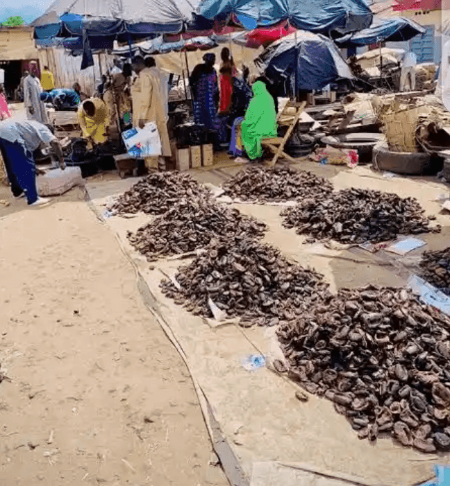

Un Centre de Délices pour le Poisson Sourcing Local
Le Marché de Poisson Fumée Jambutu est un centre commercial unique et spécialisé à Yola, célèbre pour son poisson fumé de haute qualité. Le marché source le poisson des rivières locales et des fermes piscicoles, qui sont ensuite expertement fumés et préservés pour la vente. Il sert de point de distribution majeur pour cette délicatesse locale, attirant les acheteurs de l'État et au-delà. Le marché soutient les pêcheurs et transformateurs locaux, contribuant à l'utilisation des ressources aquatiques de la région.